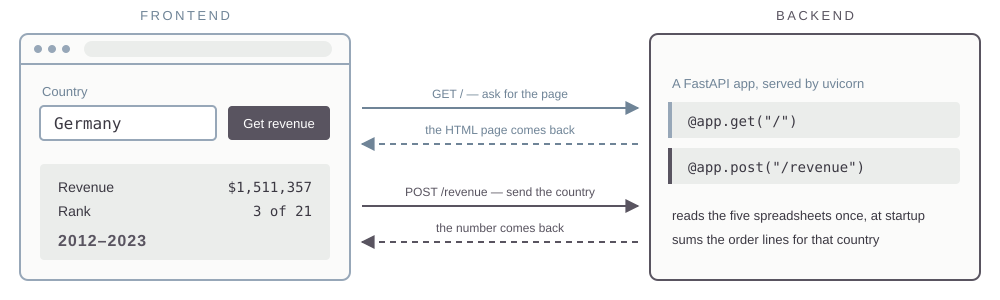

Saturday, September 26, Morning
Yesterday’s output was a number. This morning it becomes a file or an app somebody else opens.
Creating docs
Excel, Word and PowerPoint out of the machine — including into the template your firm already uses.
Creating apps
How a web app works, then build one and deploy it.
A .docx, .xlsx or .pptx is a ZIP file containing XML.
Unzip one and the document’s structure, styles and data are readable as text. That is why an agent can edit an existing file in place — keeping its template, its headers and its formatting — instead of rebuilding it.
So “edit the deck the firm already uses” opens the existing file, while “build me a deck like ours” starts from nothing.
A table
Values pasted into cells. Change an assumption and the analysis is rerun somewhere else, by you.
A model
Inputs in labelled cells, formulas referencing them, a chart bound to the range. Change an assumption in the sheet and everything moves.
Ask for formulas rather than values, and name the input cells.
| Recipient | Format | What it has to carry |
|---|---|---|
| An analyst who will extend it | .xlsx with formulas |
inputs, formulas, the definition |
| A manager approving something | .pptx or one page |
the number, the chart, the caveat |
| A job that runs every week | .csv plus a script |
reproducibility, not formatting |
| The record | .docx or PDF |
the method, in sentences |
Asking for “a deck in our style” produces an imitation of the design rather than the firm’s file.
A .pptx template is not a picture of a design. It is a file holding named slide layouts, a theme with the firm’s exact colours and fonts, and placeholder positions measured to the point.
Open one with unzip -l. The layouts are in ppt/slideLayouts/, the palette and typefaces in ppt/theme/theme1.xml.
Generating a deck
The model invents a layout. Colours are close. The logo is missing, the footer is wrong, and the title is out of position.
Filling a template
The file is opened, a named layout is chosen, and text goes into the placeholders that layout defines. Everything else is inherited.
Same request, two implementations.
.pptx in the skill’s folder.Prompt
Read template.pptx. List every slide layout by name and index, and for each one the placeholders it defines with their type and position. Write that into SKILL.md as a table, then write the instructions for filling it.
Exercise
Some of the firm’s conventions are not in the template file at all.
Exercise
If you built a workbook, change one input cell and check that the chart moves.
Explain how it works, build three, then put one on the internet.
A skill
For someone who has the agent, the files, and a reason to be at a command line.
An app
For someone with a browser and a question. No install, no terminal, no account.
Same job, different audience.
Frontend
The browser. HTML, CSS and JavaScript — it draws the page and collects the clicks.
Backend
A program on a server that listens continuously for requests. Yours will be Python.
You open a URL. The browser sends a GET request. The server sends back HTML, CSS and JavaScript. The browser interprets that and shows you a page.
Right-click any web page and choose View Page Source. That is the frontend code, exactly as the backend handed it over.
A POST request carries data the other way — a form, a country you typed. The server does what it was written to do and replies.

localhost
127.0.0.1 is the loopback address. The browser asks the machine it is already running on, and the request never reaches a network.
Ports
One machine runs many programs listening at once. The port number tells the operating system which of them gets the request.
The app is a .py file that imports FastAPI. uvicorn runs that file and starts it listening on a port.
One page, no server
Everything runs in the browser. A single HTML file you can mail to someone.
A small server
Python behind the page. Needed when there is a database, a key, or a file to write.
A server that calls a model
The page collects a question; the server sends it to the model with your key, not the user’s.
Exercise
Nothing to deploy, nothing to pay for, and it works with no network.
Exercise
The terminal prints one line per request: the method, the path, and the status code.
Exercise
You hand a host your repository. It builds the app, runs it, and puts it behind a public URL. There is no server for you to administer.
Railway, Render, Koyeb and Heroku all do this. We use Koyeb, which has a free tier.
koyeb.com.~/.env file you made on Thursday, the same way.Prompt
My goal is to push this app to GitHub as a new public repo and then create a Koyeb service connected to it. Walk me through it one step at a time.
The host builds only what is in the repository. Data files you told git to ignore never arrive, and the app fails on the host. Nothing from .env belongs in a public repo — secrets go in Koyeb’s environment settings instead.
Exercise
A custom domain is optional and takes ten minutes: buy one, create an API token at the registrar, and have the DNS record written for you.
The app you just deployed answers from what you wrote into it. This afternoon it answers from your own documents instead.
MGMT 803 · Rice Business